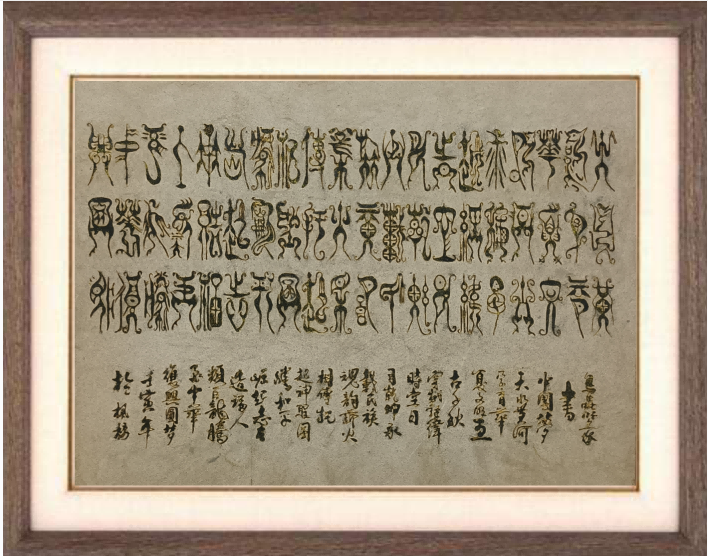
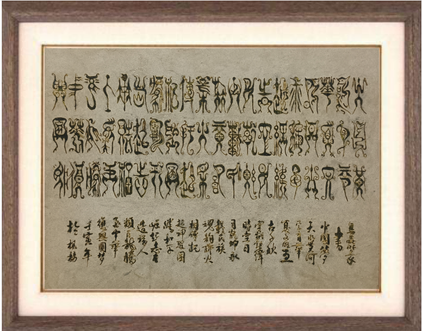

中国掐丝珐琅传承网
中国掐丝珐琅传承网
00
-
00
-
00
中国掐丝珐琅传承网
来源：“郑州非物质文化遗产协会” 微信公众号
2023.04.28
 

说起掐丝珐琅，大家联想到的可能都是些老气横秋的古代艺术品，但是来自郑州市的非遗项目掐丝珐琅传承人李焱，却用现代设计的审美，将掐丝珐琅做成了广受大众欢迎、充满时尚气息的文创产品。
今天让我们一起走近2022郑州非遗年度人物、郑州市非遗项目掐丝珐琅传承人李焱老师，感受巧夺天空的指尖艺术，了解她对这门传统艺术在郑州市的传承与普及所取得的积极成果。
李焱是一名具有人民教师和郑州市非物质文化遗产掐丝珐琅技艺代表性传承人的双重身份的代表性传承人。她勇于尝试在掐丝珐琅的形式上做出创新，原本只用于花瓶器皿的掐丝珐琅不再“高高在上”，完全击碎掐丝珐琅“老气庸俗”的固有印象，作品可爱又复古，带来前所未有的新鲜感。同时也做出了一些不同于传统的改变，比如，加入了其他材料：金属、金粉、树脂、玻璃等等。既有水彩画的空灵的通透，亦有油画般的厚重华美。
除了在艺术手法的创新，李焱老师还专注于于掐丝珐琅这门艺术的普及与传承工作。2012年，她在郑州枫杨外国语学校成立掐丝珐琅艺术坊，每周定时开展活动，将自己的技艺毫无保留的传授给一届届学生，真正实现非遗进校园、非遗扎根校园。
在日常非遗教学过程中，她不断总结经验教训，编写《掐丝珐琅制作技艺校本课程》和《传续还原掐丝珐琅制作技艺》教学设计、纲要、教案，形成系统的有计划、有方案、有步骤，可实施、可检验、可落地，成为非遗活动在学校开发实施的典型样板。
为了让更多的年轻人了解非遗，爱上非遗，在核心技艺保持不变的情况下，李炎老师从创作的题材、表现形式上进行创新，更符合今天的审美，开发非遗生活用品、文创用品，实现文化与现代生活相结合，让非遗技艺走进生活，以多元化、多形式、多载体的鲜活的呈于当下。
校园工作之外，李炎积极参加社会各界非遗传播工作，录制国博《指尖上中华》节目、郑州市非遗小课堂，为全国第十一届民族运动会制作掐丝珐琅会徽、吉祥物，在河南博物院和手工艺会展上做民族技艺公益宣讲，与此同时，组织学生创作了郑州地标系列、红色系列、民俗文化系列、郑州古八大景、二十四节气、国色芳华等等反映社会风尚和地域历史文化的作品，带学生参加非遗讲座、展示、宣传活动，让学生学有所展、学有所获。
非遗技艺，薪火相传，有了工匠精神，艺术才能保存下来，一代一代的传承。李炎老师的努力，让古老的手艺落地生根，走进大众生活，让更多年轻人爱上非遗、传承非遗，让非遗更好展现中国文化永久魅力和时代风采。